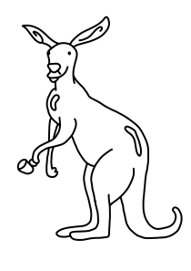

HISTORIA _MODERNA

El café en Australia es una de las joyas que hacen sentir a los australianos un profundo orgullo, y es que, aunque para muchos pueda sonar extraño, Australia es una de las cunas del café specialty.
¿Qué significa café specialty? No es otra cosa que el café que ha sido debidamente tratado, desde sus orígenes (las plantaciones) hasta su elaboración en una cafetería, con una buena máquina y un barista correctamente formado.
El café en Australia es exigente, cuya profesión tiene muchísima reputación y si quieres trabajar en Australia como barista, vas a necesitar conocimientos y experiencia en el mundo del café.
El café en Australia es una de las joyas que hacen sentir a los australianos un profundo orgullo, y es que, aunque para muchos pueda sonar extraño, Australia es una de las cunas del café specialty.
¿Qué significa café specialty? No es otra cosa que el café que ha sido debidamente tratado, desde sus orígenes (las plantaciones) hasta su elaboración en una cafetería, con una buena máquina y un barista correctamente formado.
El café en Australia es exigente, cuya profesión tiene muchísima reputación y si quieres trabajar en Australia como barista, vas a necesitar conocimientos y experiencia en el mundo del café.
¿Cómo apareció el café en Australia?
Fue tras la 2ª Guerra Mundial. Australia recibió una legión de italianos inmigrantes, de franceses, turcos y griegos, todos venerando la tradición del café, y presentaron la máquina de café espresso, que fue toda una bomba de relojería para los australianos.
Gracias a esta espectacular máquina de café estos inmigrantes podían sentirse un poco más cerca de su Europa natal, y a partir de aquí estalló el boom cafetero en Australia.
Australia es conocida como la capital del oro negro, es decir, del buen café.
Natural:
Tras ser recolectados los granos de café, se colocan en los patios de secado y se remueven para obtener un secado uniforme, paso que se repite hasta conseguir que los granos suenen como unas maracas dentro de la cereza del café. Tienen un 12% de humedad y tardan en secarse al sol entre 2 y 3 semanas, dependiendo del clima.
Con este tipo de secado se consigue un café con mayor cuerpo, dulzor, y sabor terroso.
Semi-lavado o semi-húmedo:
Se recolecta el grano maduro y se despulpa. Tras esto, pasa a unos canales donde se les hace un suave lavado tan sólo con la propia caída del agua, mientras se hace una separación por densidad.
En el patio se secan entre 2 o 3 días y luego pasan a máquinas de secado, y el tiempo dependerá del benefactor del grano, puede hacerse durante 40 horas a 40 grados, o durante 18 horas a 50 grados.
Las características del café que se consiguen con este tipo de secado es un cuerpo pronunciado con una acidez pronunciada.
lavado:
Se recolecta el fruto maduro, se le despulpa y se le introduce en unos tanques de fermentación natural durante una serie de horas concretas. Tras esto, se realiza el lavado manual, y terminado esto pasa a unos canales donde va cayendo el agua y es eliminada la mayor parte de la pulpa, a la vez que se separa por densidad.
Más tarde, es secado al sol en camas africanas o en estufas. El tiempo de secado es entre 1 y 3 semanas, dependiendo del clima y del productor. Estos son los cafés que presentan mayor acidez.
El tueste también va a afectar al sabor que luego encontraremos en el café: con un tueste ligero potenciaremos la acidez, con un tieste medio potenciamos un sabor muy equilibrado, y con un tueste oscuro (mucho tiempo) potenciamos el amargor, lo que no es para nada recomendable.
Los sabores del café, de forma muy básica, podrían resumirse en: herbal > ácido > dulce > amargo
Existe la llamada rueda de sabores, que fue creada a finales de los años 90’s por Ted Lingle, en aquel entonces el director de SCAA (asociación de cafés especiales de América) y de la Federación Nacional de Cafeteros de Colombia.
Esta rueda de sabores es un glosario de terminología de café basada en ciencia sensorial y que se ha convertido en el estándar que la mayoría de catadores usa hoy en día para describir el café.
En cuanto a los colores de la rueda, muchos piensan que tiene que ver con el aroma que describen, pero Lingle les designó esos colores en función de las moléculas que representan.
Actualmente, la rueda se ha modificado adaptándolo al nuevo lenguaje sensorial que existe hoy en día, y el propio director actual de la SCAA dice que esta rueda es la más descriptiva incluyendo a su vez menos jerga. Puedes conocer más al respecto en este enlace al PDF a la nueva rueda de sabores, mucho más fácil e intuitiva.
Vamos a ver las bebidas de café más básicas.
Espresso
Es la base de todas las bebidas, es café concentrada en 30 ml. de agua, hecho en 25 segundos, bajo 9 bares de presión. Los bares es la presión en la que cada máquina de café puede trabajar.
Ristretto
Es bastante parecido a un espresso pero con menos cantidad de agua, aproximadamente unos 20 ml.
Macchiato
Significa “manchado” en italiano, y es un espresso con crema de leche en la superficie, cubriéndose un 80%-90%.
Lattemacchiato
Vaso largo de leche emulsionada con un espresso.
Café con leche
Un espresso con 3/4 partes de leche.
Capuccino
Bebida hecha con partes iguales de café, leche y crema de leche (no, ¡no lleva chocolate!)
Mocaccino
Bebida de café con leche con sirope de chocolate caliente, aunque puede haber muchas variaciones a la hora de prepararlo.
Flat White
Aunque es muy parecido al café con leche, los baristas remarcan que el flat white es más intenso, ya que se prepara una taza de 150 ml. con dos shots de espresso y una capa fina de leche ligeramente emulsionada.